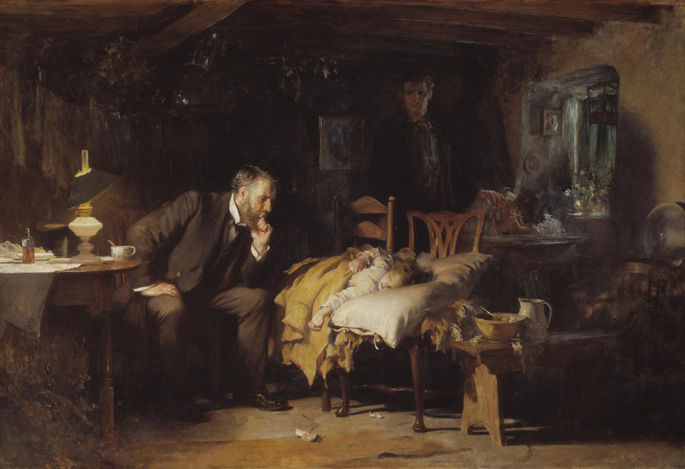

What does it mean to be sane?
The body is not the only place where we work without a clear reference. Humanity uses the words sane and insane every day, in courts, in hospitals and in ordinary speech. Break them down, and it turns out we have never been clear about what they mean.
That matters, because we live in a world where people can be detained and medicated against their will on the strength of those judgments. In 2014, in 24 US states covering half the population, there were about 591,000 emergency involuntary psychiatric detentions, 357 for every 100,000 people, and the rate was growing faster than the population (Lee and Cohen, Psychiatric Services, 2020). A power like that demands real expertise. Humanity owes it to itself to be very good at this, and the evidence below says it is not. Taking away people's rights on the authority of expertise we do not truly have is a serious harm.
Sanity begins with life, and science cannot say what life is
The discussion of sanity begins with life. Nobody calls a lifeless object sane or insane, so sanity is a property of living things. Science has no agreed definition of life. What it offers instead is a set of rules, and the rules are not enough.
Cell theory
Biology's foundation for what is alive is cell theory. As the standard OpenStax textbook puts it, Schleiden and Schwann proposed in the late 1830s “the unified cell theory, which states that one or more cells comprise all living things, the cell is the basic unit of life, and new cells arise from existing cells” (OpenStax, Biology 2e, 4.1).
The third rule is Rudolf Virchow's: omnis cellula e cellula, “all cells come from cells”, an idea dating from 1855 and popularized in his work on cellular pathology (Masic, Mater Sociomed, 2019).
Definitions of life
The working definition used by NASA: “Life is a self-sustaining chemical system capable of Darwinian evolution” (NASA Astrobiology).
The textbook list of properties: “All living organisms share several key characteristics or functions: order, sensitivity or response to the environment, reproduction, adaptation, growth and development, regulation/homeostasis, energy processing, and evolution” (OpenStax, Biology 2e, 1.2).
_,_vimentin_(red)_and_DNA_(blue).jpg){kind=link}
A rule so the paper can proceed
These definitions do a job. A probe needs something to test for; a laboratory needs to decide what counts as a living sample. Biology needs an answer before it can move on, and these rules give one.
“All cells come from cells” has a beginning problem
If every cell comes from a cell, the first one cannot be explained by the rule. Science treats the origin of life as a separate, open question. The rule describes life as it continues, not where it comes from.
What life does, not what lives
Each definition lists behaviours: dividing, metabolising, responding, evolving. A sterile animal does not reproduce and is still alive. The lists describe the machinery and leave out the one doing the living.
Life is Universal Intelligence (UI) experiencing physical reality
In a holistic model, a definition has to connect to physics, to mind, and to what came before and after. In HMR, life is UI experiencing physical reality; cells are how that experience is organised in matter.
This is what it looks like when science is myopic. Each field answers the question in front of it well enough to keep working, and no field is responsible for whether the answers fit together. Partial models like these are then quoted to the public as “what science says life is”, as if they were complete. A holistic model cannot do that. It has to account for everything at once, the physics, the mind and the origin, and when it does, there are no loose questions left over like the first cell or the sterile animal.
So the rules serve biology's purpose, and as an account of what life is they are incompatible with a holistic model of reality. That matters here: if we cannot say what life is, every judgment about whether a living mind is in touch with reality rests on an undefined base.
Three institutions, three different answers
With life undefined, humanity still judges minds. Here is what the law, psychiatry and the test of the experts themselves have to say.
Insanity as not knowing right from wrong
"Insanity" is a legal word, not a medical one. Many courts still use the test set in England in 1843 after the trial of Daniel M'Naghten: whether a person, from "disease of the mind", did not know what they were doing, or did not know it was wrong. The test asks about knowledge of right and wrong, which assumes a shared answer to what right and wrong are.
Disorder as dysfunction, not deviance
The manual used by psychiatrists defines a mental disorder as "clinically significant disturbance" in thinking, emotion or behavior that reflects a dysfunction. It adds that "socially deviant behavior (e.g., political, religious, or sexual)" is not a disorder "unless the deviance or conflict results from a dysfunction in the individual" (American Psychiatric Association, DSM-5, 2013). Who decides what counts as dysfunction is left open.
Can experts even tell?
In 1973, eight healthy people got themselves admitted to psychiatric hospitals by reporting a single symptom, then behaved normally. The hospitals had healthy people on their wards, and the staff had no idea: none of the eight was detected. A working system should be able to tell a healthy person from an ill one. The study's opening line: “It is clear that we cannot distinguish the sane from the insane in psychiatric hospitals” (Rosenhan, Science, 1973). The question it raised has never been answered.
“If you talk to God, you are praying; if God talks to you, you have schizophrenia.”
Thomas Szasz, psychiatrist, The Second Sin (1973). The line shows how much a judgment of sanity depends on a prior view of what is real.
What patients and families say goes wrong
People who use mental health services, and the families who support them, raise the same complaints again and again. Each one below is documented in peer-reviewed research or by the World Health Organization, followed by how HMR would address it.
What goes well
Where the diagnosis rests on something that can be tested or plainly observed, two clinicians usually agree: memory testing for major neurocognitive disorder, a child's developmental history for autism, a defined event for post-traumatic stress.
What does not
The two most common diagnoses in psychiatry, depression and generalized anxiety, sit near the bottom. Mixed anxiety and depression scored zero, no better than chance, and was left out of the manual. Pooled across sites, no diagnosis reached 0.8, the grade the investigators called excellent.
Whose scale this is
The grades are the field's own. Before the trials, the DSM-5 investigators set the bands: 0.8 and above excellent, 0.60 to 0.79 very good, 0.40 to 0.59 good, 0.20 to 0.39 questionable, below 0.20 unacceptable, with a goal of at least good (Clarke et al., 2013, Part I). Of 23 diagnoses, five were very good, nine good, six questionable and three unacceptable (Regier et al., 2013, Part II).
No diagnosis reached the top grade
By the field's own scale and its own trial, nothing reached excellent. The closest was major neurocognitive disorder, at 0.78 pooled across sites, just under the line. Before the trials, their designers had argued that agreement as low as 0.2 to 0.4 should be counted acceptable (Kraemer et al., 2012). A field that medicates and confines people on the strength of these labels should hold itself to a high bar, 0.8 or better.
An open admission that much is still to be learned
This can be read as the field's own admission that there is a great deal left to learn. It is not an accusation that practitioners pretend to be experts. The investigators set the bar, ran the trial and published the result themselves, and many practitioners understand that the knowledge is not yet there. What the numbers show is a field still learning.
Years pass before anyone looks
Something is missing from a picture in which people suffer for years before anyone looks. In the US National Comorbidity Survey Replication, people who eventually reached care waited a median of 6 to 8 years after a mood disorder began, and 9 to 23 years for anxiety disorders (Wang et al., Arch Gen Psychiatry, 2005). Worldwide, the WHO reports that only 40% of people with psychosis and only one third of people with depression receive formal mental health care (WHO fact sheet).
HMR's view: a defined reference for a healthy body and mind lets drift be seen early, as a measurable departure, instead of waiting for a crisis to make it obvious.
The wrong label, sometimes for a decade
In a survey of 600 people with bipolar disorder, “69% were misdiagnosed, with the most frequent misdiagnosis being unipolar depression.” Those misdiagnosed saw a mean of 4 physicians first, and “over one third waited 10 years or more before receiving an accurate diagnosis” (Hirschfeld, Lewis and Vornik, J Clin Psychiatry, 2003). On the surface it might seem understandable: bipolar disorder and depression are related, so of course they get confused. It is not understandable. These are exactly the conditions psychiatry specializes in, and it treats them with powerful drugs, sometimes against the patient's will. Getting them wrong at this rate is not what expertise looks like. Taken together, these numbers say that in this field there are no real experts yet, only people doing their best with a model that does not work.
HMR's view: diagnosis by symptom checklist sorts what a person reports. Grounding the mind in the body's physical state adds signals that can be measured and compared, not only described.
Not being heard
In recorded clinical visits, patients were invited to set out their concerns in only about a third of encounters, and those who started were usually interrupted, on average after about 11 seconds (Singh Ospina et al., J Gen Intern Med, 2018). In the bipolar survey, more than half of respondents believed their physicians' lack of understanding of bipolar disorder prevented an earlier correct diagnosis (Hirschfeld et al., 2003). The Rosenhan study above showed the reverse failure: healthy people judged ill once a label was applied.
HMR's view: an evaluation is only as good as the model of reality behind it. A person's experience is assessed against what is true, not only against what is typical.
Less time to talk
Across US office-based psychiatry, the share of visits that included psychotherapy fell from 44.4% in 1996 to 1997 to 28.9% in 2004 to 2005, a decline the authors link to reimbursement, managed care and growth in prescribing (Mojtabai and Olfson, Arch Gen Psychiatry, 2008). In plain words: money and insurance decide how long a person in distress gets to talk. We say, as a society, that we care deeply about mental health, our own and everyone else's, and then we run a system that does not allow the time understanding a person takes. That is indefensible.
HMR's view: treating the person as a whole takes time with the whole person: body, beliefs and the people around them, the three parts of our hypothesis below.
Try one, wait, try another
In STAR*D, a large real-world depression treatment study, remission rates on the first medication were 28% (HAM-D) and 33% (QIDS-SR), and many who responded did so only at or after 8 weeks (Trivedi et al., Am J Psychiatry, 2006). About two thirds of patients did not reach remission on the first drug. Most face a sequence of trials before something works: people are given medicines whose effects are not fully understood, to see what happens. No one tracks what these chemicals do to the body's tensegrity, because no one is measuring the tensegrity at all.
HMR's view: with a physical baseline and truthful signals from the body, the effect of any treatment can be tracked against a fixed reference rather than judged by feel.
Categories that blur
Of people with any mental disorder in a 12-month period, 22% had two diagnoses and 23% had three or more (Kessler et al., 2005). In the DSM-5 field trials, two clinicians interviewing the same patient agreed on major depressive disorder with a kappa of 0.28 and on generalized anxiety disorder with 0.20; six diagnoses fell in the “questionable” range and three in the “unacceptable” range (Regier et al., Am J Psychiatry, 2013). Others, such as PTSD (0.67), did well. A kappa of 0.28 means that, beyond what chance alone would produce, two clinicians examining the same patient largely do not agree.
HMR's view: overlapping categories mean the mind is being divided along lines that do not make sense. HMR proposes a different map, built on how a person relates to reality, their body and other people, which explains why today's labels overlap. HMR mental health model →
Detention that varies by border
Across 22 countries, involuntary hospitalisation ranged from 14.5 per 100,000 people in Italy to 282 in Austria, a nearly twentyfold spread. The authors found no relationship with the legal framework and called the variation “for the most part unexplained” (Sheridan Rains et al., Lancet Psychiatry, 2019).
HMR's view: when the same person can be detained in one country and not another, the standard is social, not physical. A defined reference for health would make such decisions answer to something fixed.
Shame on top of illness
The WHO states that most people with mental disorders do not have access to effective care, and that “many people also experience stigma, discrimination and violations of human rights” (WHO fact sheet).
HMR's view: if part of mental distress is the body under physical strain, it is no more shameful than a strained back. Placing the mind in the body removes much of the ground stigma stands on.
Care that is hard to reach
In 2009 to 2010, only 55.3% of US psychiatrists accepted private insurance, against 88.7% of other physicians, and acceptance of Medicare and Medicaid was lower too (Bishop et al., JAMA Psychiatry, 2014). Out-of-pocket fees and long waits follow.
HMR's view: protocols a person can learn and apply to their own body, alongside professional care, move part of the work out of the waiting room.
Expected to help, kept in the dark

The people closest to a patient, usually parents, partners or grown children, are relied on to notice warning signs, manage medication and provide care at home, yet they are often told nothing about the diagnosis or the plan. A systematic review found that family carers are expected to support care, but that the rights they need to do so “were not consistently upheld”, with professional attitudes to communication among the barriers (Rowe, J Psychiatr Ment Health Nurs, 2012). In the US, families often hear that privacy law forbids sharing; federal guidance explains when it does not (HHS, HIPAA and mental health).
HMR's view: the society around a person is one of the three parts of mental health. Families belong inside the picture, not outside the door.
A simple story that the evidence did not confirm
The history of depression is a history of confident explanations. For two thousand years it was melancholia, an excess of black bile. In the twentieth century it was treated with insulin comas, lobotomy and electroshock; the man who devised lobotomy won a Nobel Prize in 1949. Lobotomy is no longer done. The operation cut the connections at the front of the brain. It often left people passive and emotionally flat, and some died of it. The Soviet Union banned it in 1950 as inhumane (Zajicek, 2017), and other countries abandoned it from the mid-1950s, when the first antipsychotic drugs arrived, by which time tens of thousands of people had had it (Britannica). A few far more precise brain operations are still performed for the most severe cases, under strict review. That an operation now seen as a tragedy won medicine's highest prize, less than a hundred years ago, shows how sure a field can be while it is doing harm. The first antidepressants were found by accident in the 1950s, in a tuberculosis drug and an antihistamine relative, and the theory that depression is a shortage of brain chemicals was built afterwards to explain why they seemed to work. In the 1990s that theory became the public message.
Many patients were told that depression is caused by low serotonin. A 2022 umbrella review of the main lines of research concluded: “The main areas of serotonin research provide no consistent evidence of there being an association between serotonin and depression, and no support for the hypothesis that depression is caused by lowered serotonin activity or concentrations.” It notes that surveys suggest “80% or more of the general public now believe it is established that depression is caused by a ‘chemical imbalance’” (Moncrieff et al., Molecular Psychiatry, 2022).
What of the drugs built on that story? SSRIs (selective serotonin reuptake inhibitors, such as fluoxetine, sold as Prozac since 1987) are the most prescribed antidepressants, used for depression, anxiety and obsessive-compulsive disorder. About 13% of American adults took an antidepressant in a given month in 2015 to 2018 (CDC). In trials they do better than a dummy pill on average, by a modest margin (Cipriani et al., 2018), so they help some people. What fell was the explanation: no one has shown that they work by correcting a shortage of serotonin. Tens of millions of people take a drug every day on the strength of a story the evidence did not confirm. That is happening now.
What of drugs given against a person's will? No one counts how many people are given these drugs against their will. What is counted is detention, and it is rising. In 2014, 24 American states recorded about 591,000 emergency involuntary psychiatric detentions, 357 for every 100,000 people. From 2012 to 2016 the yearly rate rose 13% while the population grew 4% (Lee and Cohen, 2021). Each of those decisions rested on a judgment of the mind made with the diagnostic agreement shown above.
To be fair to both sides: the review asked whether low serotonin causes depression, not whether antidepressants help, and it did not test their effectiveness. Other researchers disputed its methods and argued the serotonin system is still implicated in depression (Jauhar et al., Molecular Psychiatry, 2023). The point that stands is narrower: a simple causal story was told to the public with more certainty than the evidence held. Stopping an antidepressant suddenly can cause withdrawal effects; any change should be planned with a prescriber.
HMR's view: truthful signals matter. Patients should hear what is known, what is not, and what is a working hypothesis, which is how we label our own claims.
A baseline for the body
A model of the fully healthy body gives diagnosis something fixed to measure against, instead of a population average. Our hypothesis is that the body's tensegrity, its web of tension and compression, shapes how a person thinks and feels, so physical signals join reported symptoms.
A baseline for reality
Judgments of sanity depend on a view of what is real. A model that accounts for science and for consciousness gives those judgments a context that holds together, and restores sanity to humanity's own picture of where it is.
A baseline for values
With a clear account of what a person is and what life is for, values can be built rather than inherited at random, and a person has something steady to stand on.
Every mind is part of UI
In HMR, everyone's mental faculties are part of Universal Intelligence. No mind is a malfunction to be managed; each is an instance of the same intelligence, working through a particular body in a particular situation.
Three ways to measure sanity, and why you need all three
From the perspective of the Holistic Model of Reality, sanity can be measured in at least three ways. Each captures something real; none is enough alone.
How in tune a person is with reality
Sanity as alignment with what is actually true. This is the deepest measure, and the hardest to use, because it needs a baseline: an agreed account of what the truth is. Humanity does not have one.
Whether a person can achieve what they want
If an intelligence has a desire and can reliably achieve it, there is a rationale at work. It may be a selfish rationale, but it is a sensible one. Inability to pursue one's own aims is one kind of breakdown.
How well a person engages with others
Sanity as the ability to take part in a shared life. Deviation from that ability is what most people actually mean by insanity, and it is the measure most easily abused, because it depends on what a given society expects.
A holistic model of sanity combines all three. It asks whether a person's picture of reality is true, whether they can act effectively within it, and how they and the people around them meet each other. Today's institutions lean on the second and third, because the first requires knowing what reality is.
Judging minds without knowing what reality is
Science does not have a handle on what reality is. It cannot say whether the universe emerges from an intelligent process or from none. It has no agreed definition of what it means to be alive: the most cited working definition, "a self-sustaining chemical system capable of Darwinian evolution", was written for the search for life on other planets, not to describe a person. It also has no settled account of what a human being is. The gaps in modern science →
Without those, we lack the context needed for much of what we call sane or insane. If a person's experience points beyond matter, are they deluded, or seeing something real? A materialist framework has to call it a symptom. A holistic one can at least ask the question.
No one can act without some model of what is real. This is not optional; it is how every living thing works. A blade of grass, an animal and a human being each operate on a model, and every model has higher or lower fidelity than another, from one species to the next and from one person to the next.
Most models are partial: physics here, medicine there, faith somewhere else, each kept separate. A holistic model is different in kind. Its parts are so interconnected that understanding one part gives insight into the others. That is what HMR aims to be.
Every era was sure it had figured it out
The history of mental health and the history of physical health mirror each other. At every point, the best minds of the time believed they understood. Years later, we found out we had been doing terrible things. Then we became sure again.
Mental health
- Neolithic onward, Europe to Peru. Holes are cut into living people's skulls (trepanation), the oldest documented surgery, in part, historians believe, to release the demons blamed for epilepsy, headache and madness. Many patients survived, as healed bone shows (Faria, Surg Neurol Int, 2013).
- About 1900 BC, Egypt. The Kahun Papyrus blames women's disorders on a uterus wandering through the body; the cure is foul smells at the nose and perfumes below to coax it back. Plato and Hippocrates carry the idea forward, and it becomes "hysteria", from the Greek for womb (Tasca et al., 2012).
- 1486, Germany. The Malleus Maleficarum, the "Hammer of Witches", is published. In this period, the same review notes, "hysterical" women are subjected to exorcism and hysteria is confused with sorcery, feeding the witch hunts (Tasca et al., 2012).
- About 1494 to 1516, the Netherlands. Hieronymus Bosch paints a quack cutting a "stone of folly" out of a man's head, a con sold as a cure for madness (pictured).
- Until 1770, London. The public can pay to view the patients of Bethlem Hospital, "Bedlam", as a form of entertainment (London Museum). Hogarth paints the scene, fashionable visitors included (pictured).
- 1790s, Paris. Patients in the asylums of Bicêtre and the Salpêtrière are kept in chains. Philippe Pinel and Jean-Baptiste Pussin remove them, and "moral treatment" is hailed as the enlightened answer.
- 1811, Philadelphia. Benjamin Rush, later called the father of American psychiatry, introduces his "tranquilizing chair", strapping patients immobile for hours to calm the blood in the brain.
- 1843, Massachusetts. Dorothea Dix reports to the legislature on the insane "in cages, closets, cellars, stalls, pens! Chained, naked, beaten with rods, and lashed into obedience." (Memorial to the Legislature of Massachusetts)
- 1851, New Orleans. A physician, Samuel Cartwright, publishes "drapetomania": a supposed mental illness that, he claimed, caused enslaved people to run away. He wrote that it was "as much a disease of the mind as any other species of mental alienation." (De Bow's Review, 1851)
- 1866, London. Surgeon Isaac Baker Brown publishes a book promoting clitoridectomy as a cure for insanity, epilepsy and hysteria in women. He is expelled from the Obstetrical Society of London in 1867 (Black, J R Soc Med, 1997).
- 1900 to 1950, Japan. A 1900 law upholds the confinement of mentally ill people in cells in their families' homes; around 1911 about 4,500 are held this way. Psychiatrist Shuzo Kure condemns the practice in a famous 1918 report, but home confinement is prohibited only in 1950 (Totsuka, Psychiatric Bulletin, 1990).
- 1903 to 1980, Barbacena, Brazil. At the Hospital Colônia, more than 60,000 people die, many of them never diagnosed with any mental illness, a history Brazilian journalists later call the "Brazilian Holocaust" (Minas Gerais Public Prosecutor's Office).
- 1916 to 1933, Trenton, New Jersey. Henry Cotton, convinced that hidden infections cause madness, has patients' teeth, tonsils, stomachs, colons and other organs removed. He claims cure rates up to 85%; a 1925 state Senate investigation links them to a 30 to 40% mortality rate (James Lind Library).
- 1927, Vienna. The Nobel Prize goes to Julius Wagner-Jauregg "for his discovery of the therapeutic value of malaria inoculation in the treatment of dementia paralytica": patients are deliberately infected with malaria so the fever attacks syphilis of the brain (Nobel Prize).
- 1930s. Insulin coma therapy, inducing repeated comas, spreads through psychiatric hospitals as a modern cure for schizophrenia. It is later abandoned.
- 1939 to 1941, Germany. The Nazi "euthanasia" program, Aktion T4, murders psychiatric patients and disabled people. By August 1941, by its own count, it has killed 70,273 people in six gassing facilities (US Holocaust Memorial Museum).
- 1941, Washington, DC. Rosemary Kennedy, sister of the future president, is lobotomized at 23 at her father's request. The operation leaves her permanently incapacitated (JFK Library).
- 1949. The Nobel Prize in Physiology or Medicine goes to Egas Moniz "for his discovery of the therapeutic value of leucotomy in certain psychoses" (Nobel Prize). In the United States, Walter Freeman performs transorbital lobotomies on some 2,500 patients in 23 states, once 228 in a two-week stretch in West Virginia, a project newspapers dubbed "Operation Ice Pick" (NPR).
- 1950s to early 1960s, Montreal. At the Allan Memorial Institute, Ewen Cameron's "psychic driving" plays recorded messages to patients over and over after "depatterning" them, work later tied to the CIA's MK Ultra program (Torbay, History of Psychiatry, 2023).
- 1963 to 1979, Sydney. At Chelmsford Private Hospital, patients are kept unconscious with drugs for days or weeks in "deep sleep therapy". At least 24 people die; a Royal Commission examines it from 1988 to 1990 (Dictionary of Sydney).
- 1970s and 1980s, Soviet Union. Dissent is diagnosed as illness. About one third of political prisoners are held in psychiatric hospitals, and the Soviets are forced out of the World Psychiatric Association in 1983 (van Voren, Schizophr Bull, 2010).
- Until December 1973. Homosexuality is classified as a mental disorder by the American Psychiatric Association (Drescher, 2015).
- 1980s and 1990s, United States. "Recovered memory" therapy produces vivid accounts of abuse, some later shown to be false, and families are torn apart. Psychologist Elizabeth Loftus documents how readily memories can be created (Loftus, American Psychologist, 1993).
- 2020, about 60 countries. People with mental health conditions are still chained or locked in confined spaces, in homes, institutions and faith healing centres across Asia, Africa, Europe, the Middle East and the Americas (Human Rights Watch).
The perfect body
- 1500s to 1700s, Europe. "Corpse medicine": for several hundred years, many Europeans, royalty included, take remedies made from human bone, blood and fat for everything from headaches to epilepsy; King Charles II takes a tincture of human skull in alcohol (Smithsonian).
- 1774 onward, London. The society later named the Royal Humane Society places kits along the Thames to revive the drowned, including bellows to blow tobacco smoke into the rectum (Science Museum).
- 1793, Philadelphia. During a yellow fever epidemic, the same Benjamin Rush champions heavy bloodletting, which was standard treatment for many conditions for centuries.
- 1847, Vienna. Ignaz Semmelweis has doctors wash their hands in chlorinated lime, and deaths on his ward fall from 18.27% to 1.27%. The establishment rejects him. He dies in an asylum in 1865, of the infection he fought (Britannica).
- 1860, Boston. Oliver Wendell Holmes tells the Massachusetts Medical Society that "if the whole materia medica, as now used, could be sunk to the bottom of the sea, it would be all the better for mankind, and all the worse for the fishes." (Currents and Counter-Currents in Medical Science)
- 1898, Germany. Bayer markets heroin as a cough medicine (Sneader, Lancet, 1998).
- 1927 to 1932, United States. Industrialist Eben Byers drinks radium water sold as a tonic, about three bottles a day; he dies in 1932 after much of his jaw has been removed (Oak Ridge Associated Universities).
- 1920s to 1950s, United States. Shoe stores X-ray customers' feet, children's included, with shoe-fitting fluoroscopes, a common fixture in the 1930s, 1940s and 1950s (Oak Ridge Associated Universities).
- 1940 to 1971. DES is prescribed to pregnant women to prevent miscarriage. In 1971 prenatal exposure is linked to a rare cancer in daughters; in Europe it is still prescribed in pregnancy until 1978 (National Cancer Institute).
- 1946. "More doctors smoke Camels than any other cigarette" runs in magazines across America (Stanford Research into the Impact of Tobacco Advertising).
- Late 1950s to 1961. Thalidomide is sold as a safe sedative for pregnant women. It is generally estimated that over 10,000 babies are born worldwide with its effects (Thalidomide Trust).
- Today. "Normal" ranges for most medical tests are set from the central 95% of people judged healthy, so every result is measured against a population that has never been defined as fully healthy. Why that matters →
From the mental health record, pictured:

_-_WGA2495.jpg){kind=link}


“Half of what we are going to teach you is wrong, and half of it is right. Our problem is that we don't know which half is which.”
Attributed to C. Sidney Burwell, dean of Harvard Medical School, addressing students. The attribution is traditional; the point is the history above.
Breaking the cycle
The pattern is the same each time: treatments are judged against the best understanding of the day, and that understanding has no fixed reference point. Without a defined baseline for what a healthy body is, or for what reality is, every era can only compare itself to the last.
HMR seeks to break that cycle by setting the baselines first: a physics-based model of the fully healthy human body, and an explicit, testable model of reality to measure minds and treatments against.
The mind runs on a body, a belief and a society
Our hypothesis is that much of mental health is a combination of three things: a person's physical health, their beliefs about what is true, and how the society around them responds to them as a person.
The perfect body
Imperfections in the body's tensegrity create stress and tension that change how a person thinks, feels and reacts.
A model of what is true
Every person runs on a model of reality. The higher its fidelity, the better it guides them. A partial model leaves gaps that fill with fear and confusion.
How others meet the person
How a person behaves in society is driven by their model of reality, and how others treat them depends on it. Whether a person is welcomed, tolerated or punished shapes what happens to them as a whole, often more than any one belief.
A sound mind, met by an unsound response
A person's model of what is true, and the way they care for their body, can both be sound. The environment around them can still be so unhealthy that its response to them is not what it should be.
In HMR, conduct in line with HMR's values should be met well by the world, and should have a good effect on everyone in the situation who shares that view. When a good and innocent person is treated badly and unjustly, the mind has no way to process it. Its model of reality is damaged.
This is HMR's reading of what trauma is, drawn from the model.
More childhood adversity, more adult illness
The Adverse Childhood Experiences study found a graded relationship: the more categories of childhood adversity a person reported, the higher their rates of adult health risk behaviours and disease, including heart disease, cancer, chronic lung disease and depression (Felitti et al., Am J Prev Med, 1998).
Protocols for the body, and a foundation for the mind
If the Holistic Model of Reality is accepted, it offers more than actionable protocols for physical health. It provides the missing foundation for mental health as well: an agreed account of what is real to measure beliefs against, a defined healthy body to measure stress and tension against, and a shared context in which a society can respond to people with understanding rather than fear.
That is the difference between treating symptoms one era at a time and treating a person whose mind, body and world are understood as one connected system.
If you are in crisis in the United States, call or text 988 for the Suicide and Crisis Lifeline. Elsewhere, please contact your local emergency number.
Sane and insane are used every day, and people are detained and medicated on the strength of them. Yet there is no agreed definition of life, of mind or of sanity, and law, medicine and religion give three different answers. In psychiatry's own field trials, graded on its own scale, no diagnosis reached the top grade, and the two most common ones sat near the bottom. HMR's starting point is that the mind runs on a body, a belief and a society, and that trouble in any of the three, trauma included, shows in the mind.